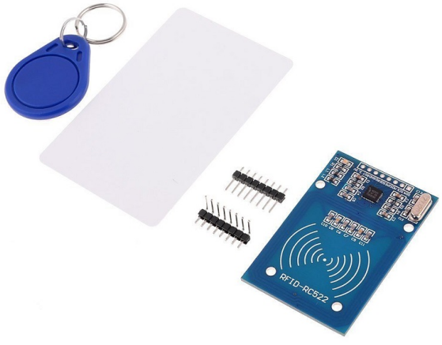
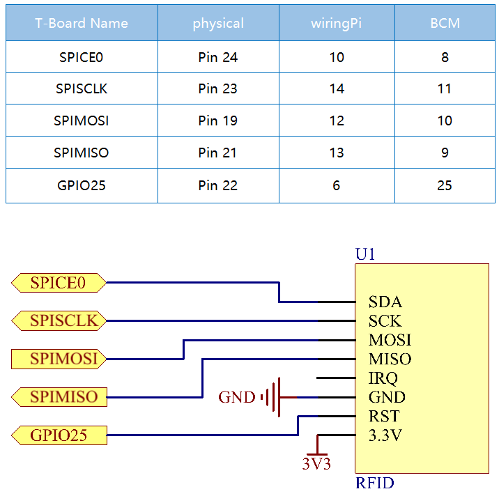

Bemerkung
Hallo und willkommen in der SunFounder Raspberry Pi & Arduino & ESP32 Enthusiasten-Gemeinschaft auf Facebook! Tauchen Sie tiefer ein in die Welt von Raspberry Pi, Arduino und ESP32 mit anderen Enthusiasten.
Warum beitreten?
Expertenunterstützung: Lösen Sie Nachverkaufsprobleme und technische Herausforderungen mit Hilfe unserer Gemeinschaft und unseres Teams.
Lernen & Teilen: Tauschen Sie Tipps und Anleitungen aus, um Ihre Fähigkeiten zu verbessern.
Exklusive Vorschauen: Erhalten Sie frühzeitigen Zugang zu neuen Produktankündigungen und exklusiven Einblicken.
Spezialrabatte: Genießen Sie exklusive Rabatte auf unsere neuesten Produkte.
Festliche Aktionen und Gewinnspiele: Nehmen Sie an Gewinnspielen und Feiertagsaktionen teil.
👉 Sind Sie bereit, mit uns zu erkunden und zu erschaffen? Klicken Sie auf [hier] und treten Sie heute bei!
2.2.7 MFRC522 RFID-Modul
Einführung
Radio Frequency Identification (RFID) bezieht sich auf Technologien, die die drahtlose Kommunikation zwischen einem Objekt (oder Tag) und einem Abfragegerät (oder Lesegerät) verwenden, um solche Objekte automatisch zu verfolgen und zu identifizieren.
Einige der häufigsten Anwendungen für diese Technologie sind Lieferketten für den Einzelhandel, militärische Lieferketten, automatisierte Zahlungsmethoden, Gepäckverfolgung und -verwaltung, Dokumentenverfolgung und pharmazeutische Verwaltung, um nur einige zu nennen.
In diesem Projekt werden wir RFID zum Lesen und Schreiben verwenden.
Komponenten

Prinzip
RFID
Radio Frequency Identification (RFID) bezieht sich auf Technologien, bei denen eine drahtlose Kommunikation zwischen einem Objekt (oder Tag) und einem Abfragegerät (oder Lesegerät) verwendet wird, um solche Objekte automatisch zu verfolgen und zu identifizieren. Die Tag-Übertragungsreichweite ist auf mehrere Meter vom Lesegerät begrenzt. Eine klare Sichtlinie zwischen Lesegerät und Etikett ist nicht unbedingt erforderlich.
Die meisten Etikette enthalten mindestens eine integrierte Schaltung (IC) und eine Antenne. Der Mikrochip speichert Informationen und ist für die Verwaltung der Hochfrequenzkommunikation mit dem Lesegerät verantwortlich. Passive Etiketts haben keine unabhängige Energiequelle und sind auf ein externes elektromagnetisches Signal angewiesen, das vom Lesegerät bereitgestellt wird, um ihren Betrieb zu betreiben. Aktive Etiketts enthalten eine unabhängige Energiequelle, z. B. eine Batterie. Dann können sie eine erhöhte Verarbeitung, Übertragungsfähigkeit und Reichweite aufweisen.
MFRC522
MFRC522 ist eine Art integrierter Lese- und Schreibkartenchip. Es wird üblicherweise im Radio bei 13,56 MHz verwendet. Es wurde von der NXP Company eingeführt und ist ein berührungsloser, kostengünstiger und kleiner Niederspannungs-Kartenchip, der die beste Wahl für intelligente Instrumente und tragbare Handheld-Geräte darstellt.
Der MF RC522 verwendet ein fortschrittliches Modulations- und Demodulationskonzept, das in allen Arten von passiven kontaktlosen Kommunikationsmethoden und -protokollen mit 13,56 MHz vollständig dargestellt wird. Darüber hinaus unterstützt es den schnellen CRYPTO1-Verschlüsselungsalgorithmus zur Überprüfung von MIFARE-Produkten. Der MFRC522 unterstützt auch die berührungslose Hochgeschwindigkeitskommunikation der MIFARE-Serie mit einer bidirektionalen Datenübertragungsrate von bis zu 424 kbit/s. Als neues Mitglied der hochintegrierten 13,56-MHz-Lesekartenserie ist der MF RC522 dem vorhandenen MF RC500 und MF RC530 sehr ähnlich, es gibt jedoch auch große Unterschiede. Es kommuniziert mit dem Host-Computer über die serielle Art und Weise, die weniger Verkabelung erfordert. Sie können zwischen SPI-, I2C- und seriellem UART-Modus (ähnlich wie RS232) wählen, um die Verbindung zu reduzieren, Platz auf der Leiterplatte zu sparen (kleinere Größe) und Kosten zu senken.
Schematische Darstellung
Experimentelle Verfahren
Schritt 1: Bauen Sie die Schaltung auf.

Schritt 2: SPI einrichten (weitere Informationen finden Sie in Anhang. Wenn Sie SPI-Konfiguration haben, überspringen Sie diesen Schritt.)
Für Benutzer in C-Sprache
Schritt 3: Gehen Sie zum Ordner der Kode.
cd ~/davinci-kit-for-raspberry-pi/c/2.2.7/
Schritt 4: Kompilieren Sie die Kode.
make read
make write
Bemerkung
Es gibt zwei Beispiele, mit denen Sie die Karten-ID lesen oder schreiben können. Sie können je nach Bedarf eines davon auswählen.
Schritt 5: Führen Sie die ausführbare Datei aus.
sudo ./read
sudo ./write
Code Erklärung
InitRc522();
Mit dieser Funktion wird das RFID RC522-Modul initialisiert.
uint8_t read_card_data();
Diese Funktion wird zum Lesen der Daten der Karte verwendet. Wenn der Lesevorgang erfolgreich ist, wird „1“ zurückgegeben.
uint8_t write_card_data(uint8_t *data);
Diese Funktion wird verwendet, um die Daten der Karte zu schreiben und gibt „1“ zurück, wenn das Schreiben erfolgreich war. *data sind die Informationen, die auf die Karte geschrieben werden.
Für Python-Sprachbenutzer
Schritt 2: Aktivierung der virtuellen Umgebung.
Bemerkung
Bevor Sie die Aktivierung durchführen, müssen Sie sicherstellen, dass Sie eine virtuelle Umgebung erstellt haben. Bitte beachten Sie: Erstellen einer virtuellen Umgebung.
Jedes Mal, wenn Sie den Raspberry Pi neu starten oder ein neues Terminal öffnen, müssen Sie erneut den folgenden Befehl ausführen, um die virtuelle Umgebung zu aktivieren.
source myenv/bin/activate
Nachdem die virtuelle Umgebung aktiviert ist, sehen Sie den Umgebungsnamen vor dem Befehlszeilen-Prompt, was darauf hinweist, dass Sie innerhalb der virtuellen Umgebung arbeiten.
Schritt 3: Installation der Bibliotheken.
Die spidev-Bibliothek hilft bei der Handhabung von Interaktionen mit SPI und ist ein Schlüsselelement dieses Tutorials, da wir sie für den Raspberry Pi benötigen, um mit dem RFID RC522 zu interagieren.
Führen Sie den folgenden Befehl aus, um spidev über pip auf Ihrem Raspberry Pi zu installieren.
sudo pip3 install spidev
Fahren Sie mit der Installation der MFRC522-Bibliothek fort. Die MFRC522-Bibliothek enthält zwei Dateien: MFRC522.py und SimpleMFRC522.py.
Dabei ist MFRC522.py die Realisierung der RFID-RC522-Schnittstelle, diese Bibliothek übernimmt alle schweren Arbeiten bei der Kommunikation mit RFID über die SPI-Schnittstelle des Pi.
SimpleMFRC522.py nimmt die Datei MFRC522.py und vereinfacht sie erheblich, indem sie es Ihnen ermöglicht, nur mit einigen Funktionen anstatt mit einigen Funktionen umzugehen.
sudo pip3 install mfrc522
Schritt 4: Beenden der virtuellen Umgebung.
Wenn Sie Ihre Arbeit abgeschlossen haben und die virtuelle Umgebung verlassen möchten, führen Sie einfach folgenden Befehl aus:
deactivate
Damit kehren Sie zur globalen Python-Umgebung des Systems zurück.
Schritt 5: Gehen Sie zum Ordner der Kode.
cd ~/davinci-kit-for-raspberry-pi/python/2.2.7
Schritt 6: Führen Sie die ausführbare Datei aus.
sudo python3 2.2.7_read.py
sudo python3 2.2.7_write.py
Bemerkung
Nach dem Ausführen von
2.2.7_read.pywerden dieidund dertextIhrer Karte in der Shell ausgegeben.Nachdem Sie
2.2.7_write.pyausgeführt haben, müssen Sie zuerst eine Nachricht schreiben, zur BestätigungEnterdrücken und schließlich Ihre Karte auf das MFRC522 RFID-Modul legen, um das Schreiben abzuschließen.
code
Bemerkung
Sie können den folgenden Code Ändern/Zurücksetzen/Kopieren/Ausführen/Stoppen . Zuvor müssen Sie jedoch zu einem Quellcodepfad wie davinci-kit-for-raspberry-pi/python gehen.
# read
import time
from mfrc522 import SimpleMFRC522
import RPi.GPIO as GPIO
reader = SimpleMFRC522()
def main():
while True:
print("Reading...Please place the card...")
id, text = reader.read()
print("ID: %s\nText: %s" % (id,text))
time.sleep(3)
def destroy():
GPIO.cleanup()
if __name__ == '__main__':
try:
main()
# When 'Ctrl+C' is pressed, the program destroy() will be executed.
except KeyboardInterrupt:
destroy()
# write
from mfrc522 import SimpleMFRC522
import RPi.GPIO as GPIO
reader = SimpleMFRC522()
def main():
while True:
text = input('Please write new data:')
print("Please place the card to complete writing")
reader.write(text)
print("Data writing is complete")
def destroy():
GPIO.cleanup()
if __name__ == '__main__':
try:
main()
# When 'Ctrl+C' is pressed, the program destroy() will be executed.
except KeyboardInterrupt:
destroy()
Code Erklärung
reader = SimpleMFRC522()
Instanziieren Sie die Klasse SimpleMFRC522() .
reader.read()
Diese Funktion dient zum Auslesen von Kartendaten. Wenn das Lesen erfolgreich ist, werden ID und Text zurückgegeben.
reader.write(text)
Diese Funktion wird verwendet, um Informationen auf die Karte zu schreiben. Drücken Sie die Taste Enter , um das Schreiben zu beenden. Text ist die Information, die auf die Karte geschrieben werden soll.
Phänomen Bild